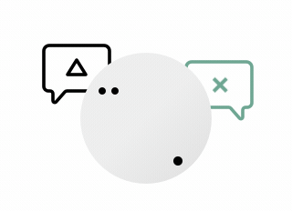
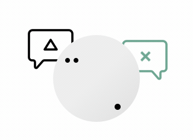

THE NEW YORK TIMES — #FOCUS — 10 MIN
Cal Newport: How to Actually, Truly Focus on What You're Doing
— A collection of resources for a healthy and balanced approach to work.


Stress, Sleep, Focus, Anxiety, Confidence, Motivation, ...

 



THE NEW YORK TIMES — #FOCUS — 10 MIN
Cal Newport: How to Actually, Truly Focus on What You're Doing

YOUTUBE — #SLEEP — 1H 55MIN
JRE #1109 - Matthew Walker

THE GUARDIAN — #SLEEP — 10 MIN
Sleep: How Much Do We Really Need?
YOUTUBE — #FOCUS — 9 MIN
I Quit Social Media For 30 days